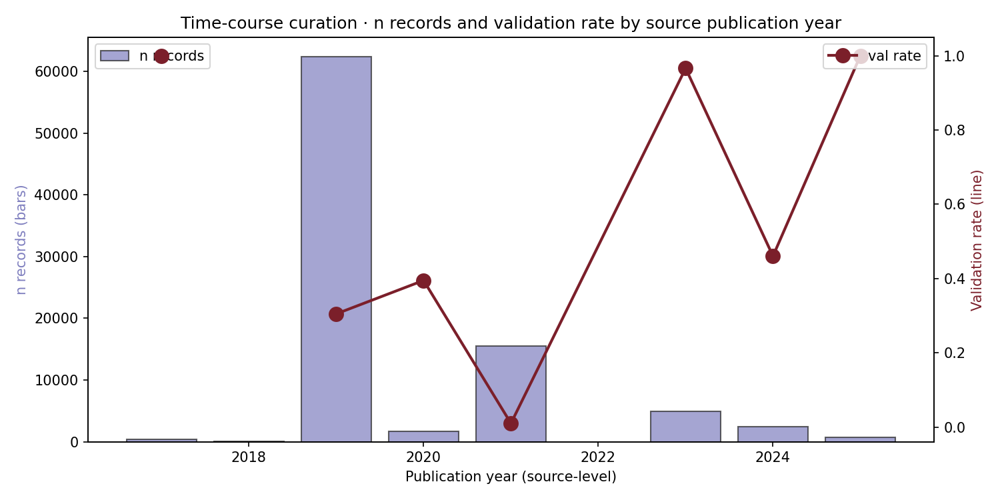

이 페이지는 원본 내용을 유지하면서, 첫 화면에 분석 데이터 정의서, 현재 claim boundary, 읽는 순서, figure/table 해설을 새로 붙인 2026-05-09 리뉴얼 버전입니다. 모든 그림은 “어떤 데이터가 들어갔는지 / 어떻게 읽는지 / 어디까지 주장 가능한지”를 같이 표시합니다.
GSE76039 / Landa advanced thyroid 8-gene mini-index RAI_8 / thyroid differentiation score Cohen's d / Spearman rho / Cox HR Neoantigen / pMHC / TCR resources
| Term | Class | Definition | Where this page uses it |
|---|---|---|---|
| GSE76039 / Landa advanced thyroid | cohort | Advanced thyroid cancer expression resource used as a PDTC/ATC lineage-collapse benchmark. | Mechanism heterogeneity, advanced-disease comparisons, and reverse-causality boundary checks. |
| 8-gene mini-index | score | Curated thyroid-lineage/dedifferentiation panel used to split molecular dark-matter states; higher DM1-like score means more dedifferentiated. | Paper 1 core axis and many downstream transfer/image/vulnerability pages. |
| RAI_8 / thyroid differentiation score | score | Mean z-score over thyroid differentiation genes; direction is differentiated / RAI-avid unless explicitly negated. | Lineage preservation/collapse comparisons and treatment-rationale pages. |
| Cohen's d / Spearman rho / Cox HR | statistic | Effect-size and association statistics reported from local TSV/JSON/HTML tables; direction must be read from each table caption. | Most dossier and validation pages. |
| Neoantigen / pMHC / TCR resources | external resource | Neoantigen, protein-language-model, structural, TCR and literature-corroboration resources used in the vaccine pages. | Cancer vaccine, neoantigen, TCR and pMHC pages. |

time course
active_learning_browser braf_v600e_deep_dive cancer_gene_matrix cv_agent_demo hla_atlas hla_class_deep_dive k2_bd_report k2_t1_cards
Current situation: current_situation_2026_0509.html · Source page: project/papers_hub_2026_0509/time_course.html · Renewed page: project/papers_hub_2026_0509/time_course.html · Voice-protected manuscript sections were not edited.
Per-source publication year × validation rate. Reveals how the field's labeling philosophy has shifted: 2017-2018 = curation-positive, 2019-2021 = aggregator-balanced, 2023-2025 = positive-class-biased. Each curator's validation rate reflects the time and methodology of its construction.
Figure · n records (bars, left axis) and validation rate (line, right axis) by source publication year. Note the dramatic 2021 drop driven by NEPdb's negative-heavy curation.
| Year | Source | n records | Val rate | Curation philosophy |
|---|---|---|---|---|
| 2017 | McPAS-TCR | 433 | 1.00 | TCR-pMHC pairs (positive only) |
| 2018 | TSNAdb v2 validated | 83 | — | HELD_OUT validated (small) |
| 2019 | IEDB v3 T-cell | 62,376 | 0.31 | Aggregator (mix of pos/neg) |
| 2020 | TESLA mmc4/7 + dbPepNeo | 1,676 | 0.40 | Patient-matched balanced |
| 2021 | NEPdb | 15,556 | 0.01 | ★ Tested-but-not-recognized inclusive |
| 2023 | BigMHC + CEDAR + NeoRanking | 4,972 | 0.97 | API-filtered (positive-only) |
| 2024 | IMPROVE benchmark | 2,436 | 0.46 | Tested 17.5k → 467 T-cell+ |
| 2025 | Neodb (Wu) | 722 | 1.00 | Literature-curated (positive only) |
아래 audit는 이 HTML 안의 모든 img와 table을 스캔해 만든 provenance layer입니다. 각 그림/표가 어떤 데이터 계열을 받았는지, 어떻게 읽어야 하는지, 어떤 로컬 path를 봐야 하는지, 어디까지가 자동 추정인지 분리합니다.
time course
| # | Asset path | Caption / page explanation | Data entered | Matched local result/source |
|---|---|---|---|---|
| 1 | manuscript_artifacts/time_course_fig.png | time course | Inline page visual; source path and caption are the binding provenance row for this audit. | No same-basename result file found; use page asset path as provenance. |
| # | Caption / heading | Data entered |
|---|---|---|
| 1 | Inline HTML table 1 | Rows are embedded in this HTML file. Treat the table body as the immediate data source; upstream TSV/JSON is listed when linked or named in the page. |
| # | Level | Heading |
|---|---|---|
| 1 | H1 | Time-Course Curation Evolution |
| 2 | H2 | Year × validation rate |
| 3 | H2 | Per-year breakdown |
| 4 | H2 | Implications for benchmark design |
| 5 | H2 | Honest caveats |
| # | Link |
|---|---|
| 1 | curator_audit.html |
| 2 | lumenix_cancer_vaccine_index.html |
{kind=link}